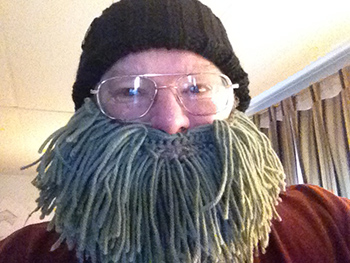

BackStory -
I began my career in graphic design and the graphic arts with photography. After a long-time interest in photographic work I took classes in it while attending Eastern Washington University, Cornish College of The Arts and art history at the University of Washington. This involved working with traditional silver halide techniques in 35mm, medium and large formats. I believe that a good image can be acquired using and media or device.
Contact Me -
Currently I live near Spokane WA, in the West Plains area. It is what I call a rural-suburban area consisting of 10 acre lots sprinkled among the farm fields of wheat, barley, potatoes and other crops. Fairchild Air Force Base is to the south of me, offering the distraction of low flying aircraft on a daily basis. It is generally peaceful with the advantages of a small city nearby, offering my favorite living environment.
I began my career in graphic design and the graphic arts with photography. After a long-time interest in photographic work I took classes in it while attending Eastern Washington University, Cornish College of The Arts and art history at the University of Washington. This involved working with traditional silver halide techniques in 35mm, medium and large formats. I believe that a good image can be acquired using and media or device.
Contact Me -
Currently I live near Spokane WA, in the West Plains area. It is what I call a rural-suburban area consisting of 10 acre lots sprinkled among the farm fields of wheat, barley, potatoes and other crops. Fairchild Air Force Base is to the south of me, offering the distraction of low flying aircraft on a daily basis. It is generally peaceful with the advantages of a small city nearby, offering my favorite living environment.

My "rustic phase".
My "rustic phase".